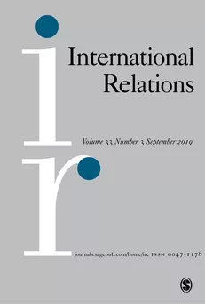

收录于合集 #理论研究 96个
作品简介
【作者】 Ryder McKeown 多伦多大学政治学系博士生，英属哥伦比亚大学政治学系硕士。曾就职于加拿大国防部政策发展（新兴能力）局。研究方向：国际法、规范、威慑、新军事技术的影响。谷歌学术统计其被引次数184，h指数3。
【编译】 赵雷（国政学人编译员，山东大学政治与公共管理学院硕士生）
【校对】 周雨橙
【审核】 施榕
【排版】 吴俣
【来源】 Ryder, M. (2009). Norm Regress: US revisionism and the slow death of the torture norm. International Relations , 23 (1), 5–25.
期刊介绍

《国际关系》（International Relations），是国际关系领域的顶尖期刊之一，由SAGE出版社与大卫·戴维斯纪念研究所(David Davies Memorial Institute)联合出版编辑。其2018年影响力因子为1.385，在“国际关系”类别的85种期刊中排名第43位。
规范退化：美国的修正主义及酷刑规范的缓慢消亡
Norm Regress: US Revisionism and the Slow Death of the Torture Norm
Ryder McKeown
内容提要
在美国，反对酷刑的规范是否存在合法性危机?如果存在，这是否构成规范本身的危机?建构主义国际关系理论能否解释这一规范为何反而被其最重要的支持者所严重削弱?迄今为止，关于规范的建构主义文献一直受到“良性规范偏见”的困扰，这种偏见没有充分考虑到所谓的“内化”规范(比如禁止酷刑的规范)的可逆性。本文围绕9 · 11事件后美国审讯的修辞、政策和实践的相关考察，提供一个理论模型来解释“规范退化”或规范的消亡，以弥补建构主义文献中的疏漏。本文认为酷刑规范在美国正遭遇合法性危机，自由主义国家未来发生的任何酷刑事件都很可能导致国际规范本身的合法性危机。
文章导读
一、介绍
反恐战争让酷刑重见天日。在美国，酷刑的卷土重来引发了学术和实践上的重大问题，因为美国长期被视为“人权卫士”且拥有悠久宪政和法治历史。反对酷刑这一被普遍认为已经“内化”的规范，却被一个自由主义国家违反，那么，国际关系理论能否解释一个自由主义国家如何堕落至此？这种规范的退化，对于反酷刑的道德和法治规范而言意味着什么？反对酷刑的规范在美国国内是否存在合法性危机?如果存在，这样一个举足轻重的自由主义国家违反酷刑规范是否构成该规范本身的合法性危机?
作者认为，建构主义的两项不足限制了它对以上问题的解释力。第一，尽管建构主义者在展示规范如何产生和传播、规范的哪些特质使其特别突出、规范如何在世界政治中的安全和人权领域发挥因果效力等方面取得了长足进展，但他们没有充分对那些可能导致 “已内化”规范发生退化的条件进行理论化。第二，主流建构主义理论要么如同新现实主义和新自由主义理论一样把国家视为单一行为体，要么关注规范兴起和扩散的跨国过程。然而，规范获得或失去显著性的过程源于国内，对前面两者的关注忽略了对国内过程的探索。即使是为了探索国际规范与国内政治的互动而打开了国家的 “黑匣子”，学者们也过于关注所谓的良性规范，因此忽略了美国国内对酷刑的漠视和反酷刑规范的弱化。
在本文中，作者致力于为已有的建构主义研究进行必要的补充，提出一个与玛莎·芬尼莫尔（Martha Finnemore）和凯瑟琳·斯金克（Kathryn Sikkink）的“规范生命周期”（Norm life cycles）模型互补的模型——“规范死亡序列”（Norm death series），以解释被内化的规范失去显著地位和去内化的过程。芬尼莫尔和斯金克强调“规范倡导者”（Norm entrepreneurs），而作者则将小布什总统和美国政府视为“规范修正主义者”，强调他们在反酷刑规范退化中的作用，认为他们意图将酷刑重新作为反恐战争中可接受的和必要的工具。作者认为，规范修正主义者成功地利用了9· 11事件后美国民众普遍存在的恐惧、愤怒和仇外情绪，宣布美国进入长期的例外状态，并将美国的敌人描绘成不适用道德或法律考量的人，将酷刑描述为捍卫美国自由身份有用且必要的手段，将恐怖主义描述为始终无所不在的威胁。在国家安全问题上，媒体对直接挑战总统犹豫不决，公众则表现出了令人惊讶的默许，从而给了总统相当大的自由，让他可以在酷刑事件曝光后继续推行自己的酷刑政策。由此，规范修正主义者成功地将酷刑从人道主义问题转变为一个安全问题，使反酷刑规范发生退化。建构主义学者曾自信地声称“揭露国家的伪善是改变国家行为的有效策略”，在这里，作者对这一论断表示出深深的怀疑。
二、建构主义的前景及不足
1、 良性规范偏差
建构主义能够同时解决物质和思想上的问题，这使得它成为解释美国酷刑的完美工具。然而，建构主义中存在的“良性规范”偏见限制了他们对观念在世界政治中可能产生负面影响的认识。此外，尽管建构主义者对规范形成和扩散的过程进行了重要且令人信服的研究，但很少有人同时认识到，这种道德变化可能是肤浅而短暂的。因此，目前的规范理论多少有点目的论的味道，许多人似乎把规范的创造和扩散看作是迈向更文明世界历程中不可逆转的一部分。例如，凯瑟琳•斯金克(Kathryn Sikkink)认为，人权规范中诸如反酷刑规范等内容，被自由主义国家普遍接受为是固然存在的 (并且我们可以假设，这种接受还会继续下去)。几乎所有人都认为，禁止酷刑的准则是“人权制度中最健全的准则”之一，甚至部分构成了一个自由主义国家的特性。因此，建构主义很难解释美国酷刑的回归。
2、 忽视国内过程
许多针对规范的研究都显示出一种倾向，即主要在国际层面研究规范对国家的约束作用、构成性作用和社会化过程，而不详细分析规范如何与国内的施动者相互作用。理查德·普莱斯(Richard Price)指出“通过规范倡导者和效仿来接受规范，往往已经超越了国内政治中的运作方式”。这种结构上的重点并不是错误的，国际进程肯定在规范的传播方面发挥了主要的作用——但是，单纯强调国家社会化过程中效仿的作用，可能会忽视国家内部的复杂过程，因为一种既定的规范可能被国家接受也可能被抛弃。尽管普莱斯的方法在解释禁止地雷的跨国公民社会（Transnational civil society）运动方面似乎非常有效，但它在解释美国的酷刑案例中几乎没有什么作用。在美国，酷刑的原因肯定不是模仿叙利亚、埃及或摩洛哥等已知的施虐者。
3、 “规范生命周期”与规范内化
芬尼莫尔和斯金克认为，规范至少要经历三个阶段:首先，是规范的兴起阶段（Norm emergence），在这一阶段中规范形成，“规范倡导者”会努力说服其他国家接受这一规范，如果接受规范的国家数量达到倾斜点（Tipping point）即体系内国家数量的三分之一，就会进入下一阶段。其次，是规范的普及阶段（Norm cascade），在这一阶段中，规范被越来越多追求一致性和合法性的行为体接受。最后，是规范的内化阶段（Internalization），即规范已被普遍接受，不会再受到质疑，成为“理所当然”。生命周期或内化过程并非不可避免，一些规范可能兴起却不能普及，另有一些规范则可能无法内化。然而，一旦完成内化，规范就会变得强而有力，甚至永远不会受到质疑。虽然芬尼莫尔和斯金克认识到他们关于规范内化的讨论有滑向决定论的危险，但他们的规范生命周期有终点这一事实表明，他们的理论忽略了规范退化或去内化的可能性。
虽然斯金克声称内化是一种理所当然的服从状态，“与个体信仰无关”。但是作者认为，在对规范的去内化进行理论分析时，将两个截然不同但又相互关联的过程分开是很重要的:个人的去内化和公共的去内化。前者涉及到对规范适当性根深蒂固的个人信念受到质疑的过程。后者是一个公共过程，包括政策选择和公开辩论，挑战一个国家内部习以为常的某种规范。但是公共的去内化在很大程度上取决于个人去内化的程度，即一种规范如果被大多数公民抛弃，就不会在一个国家长期存在。不过，两者并不总是携手并进的，比如可能存在很大一部分的个体从未将某一规范内化，或者早就将其去内化了，但如果不存在有影响力的行为体将事实公诸于世，这一规范在公共领域将继续被视为理所当然。这一区别对考察美国的酷刑案例至关重要，在讨论美国国内反对酷刑规范的去内化时，有必要把重点放在改变个人信仰(通过民意调查来衡量)和规范的公众地位上（通过公共话语和政府政策来衡量）。这两者紧密地相互联系，在公共领域对规范的挑战可能有助于个人的去内化，反之亦然。
4、 议题框定（F raming）和伪善
芬尼莫尔和斯金克强调了“框定”的重要性，并发现“认知框定的建立”对道德进步非常重要。理查德·普莱斯进一步证实了这一点，他指出，跨国公民社会在将地雷从军事问题转化为人道主义问题方面取得了巨大成功，通过迫使国家公开辩护自己的立场，它将举证责任转移到各国身上，由国家来证明，在道德权衡下，地雷的军事效用比需要付出的巨大的人道主义代价更为重要。这种技巧被证明能够非常成功地穿透国家的安全政策，并最终实现了国家政策的重大变化。不难想象，当规范修正主义者战略性地构建新标准时，认知框定对道德倒退同样重要。作者认为小布什政府及其支持者的策略与跨国禁止地雷运动有很多共同之处，只是他们把人道主义问题重新框定为安全问题。
建构主义者还建议，在迫使国家履行其道德承诺时，揭露国家的言行不一有其重要性。曝光国家的伪善，迫使那些重视合法性和世界道德地位的国家言行一致。然而，美国的酷刑案对这一假设提出了挑战，因为即使在全面曝光阿布格莱布(Abu Ghraib)虐囚丑闻，并有证据表明这是一项广泛系统性计划的一部分，也没有任何高级政府官员面临法律制裁，小布什政府甚至动用总统否决权，为某些豁免CIA审讯的行为进行辩护。对于建构主义者来说，这可能是酷刑故事中最令人震惊的地方:这个系统在它被揭露之后幸存了下来！如果受众们不确定所揭露行为的道德地位，那么揭露伪善的效果就会明显降低。
三、规范死亡序列：绘制规范退化图
作者以芬尼莫尔和斯金克“规范生命周期”模型的终点——“规范内化”为出发点，将规范退化模型分为三个阶段。
第一阶段是规范遭遇挑战的阶段（Challenge），某些规范修正主义者（通过政策、实践或话语的改变，积极寻求重塑国家成员对其国家与规范关系的理解）对迄今被视为理所当然的规范提出了某种挑战。根据挑战的强度和环境，以及相关受众的接受程度，或挑战引发受众的共鸣程度，规范可能会因此失去其显著性，从而进入第二阶段——挑战蔓延阶段。
挑战蔓延阶段（Reverse cascade）可以分为两个部分，首先，这一规范在国内失去了显著性。这是一个高度竞争阶段，规范的捍卫者寻求抵制修正主义者提出的新解释，这场斗争可能发生在公共话语中，也可能发生在国会和法院等政府机构内部。胜者不仅可以把握政策的方向，还可博得民意。即使是最显著的规范也不会一直被遵守，因此也会出现罕见的、不合理的打破规范的情况。然而，有目的地制定与规范相矛盾的政策，特别是如果同时公开为这些政策辩护，将对规范构成重大挑战，并表明其在该国家内的重要性正在下降。作者认为，在公共话语层面上对规范的公开挑战一旦被公众接受，舆论就会转而支持规范修正主义者，导致规范遭受国内的合法性危机。其次，这一规范在国际上失去显著性。这是因为其他国家的领导人注意到，打破该规范所需背负的骂名和代价已大大减少。在这个阶段，在一定程度上把国家拟人化是可以接受的，因为国家身份将被证明是非常重要的，只有受尊敬的自由主义国家挑战禁止酷刑的规范才会对国际人权准则造成更大的损害，禁止酷刑的规范一直在承受某些非自由主义国家的挑战，但它的合法性毫发无损。最后，如果这一挑战得到了体系中其他受人尊敬的成员的充分响应，这一规范就会遭遇一场国际合法性危机。如果这个危机得不到解决，那么规范退化就会进入规范死亡序列的最后阶段:规范消亡（The expiration of the norm）。
接下来作者将检验这个模型，运用规范死亡序列来解释美国的酷刑回归现象。它不仅可以有效分析美国酷刑回归的过程，还能帮助预测酷刑规范的未来，而且它应该有助于解释所谓的“内化”规范是如何被如此严重地忽视。
四、死亡序列的第一阶段：修正主义者的挑战
1、美国与他者
小布什政府通过不断使用“我们/他们”二元对立的话语，为酷刑创造了条件。这种话语将世界呈现为一个以秩序与混乱为划分标准的道德等级体系。2001年9月17日，小布什总统称恐怖分子和那些庇护他们的人是“邪恶的、野蛮的人”。与此形成鲜明对比的是，小布什用溢美之词赞扬了美国，说美国代表了这个世界上一切纯洁美好的东西:“我们国家的事业永远大于我们的国防。我们一如既往地为正义与和平而战——一种有利于人类自由的和平。这一论述促使人们普遍接受这样一种观点，即“野蛮”的工具有时是维护“文明”所必需的，而在一场与邪恶本身的战争中，美国人必须接受一种“自身健康的野蛮”。
针对美国及其理想的恐怖主义袭击行为构成了国际事务历史上真正的范式转变。根据这一逻辑，战术的根本转变必须与威胁的根本转变相匹配，即使这意味着突破囚犯审讯的边界。当美国人面对一个愿意为自己的事业而杀害平民甚至舍弃自身性命的敌人时，巨大恐惧引发了一种新的镜像，即美国人“放弃一切约束”与一个不受约束的对手作战。回想迪克•切尼(Dick Cheney)的话:“当你想到世贸中心遭受的无情恐怖袭击时，对恐怖分子的惩罚似乎再严厉也不为过。”
小布什政府认为，美国的国防完全依赖及时的情报。2001年10月，随着美国联邦调查局(FBI)对四名恐怖主义嫌疑人的持续沉默越来越感到失望，情报界的讨论越来越多地转向酷刑。阿尔弗雷德•麦考伊指出，在9·11事件后不久，小布什总统就启动了处于休眠状态的CIA酷刑计划，赋予该机构全面的权力，助其开展反恐计划。小布什曾对时任国防部长唐纳德•拉姆斯菲尔德(Donald Rumsfeld)大喊:“我不在乎国际律师怎么说，我们要踢一些人的屁股!”带着这个目标，小布什将反恐战争的指挥权交给了中央情报局，并严格要求以任何必要的手段取得成果。
2、政府律师重新解释了酷刑公约
1984年《联合国禁止酷刑和残忍及非常规惩罚公约》（UN Convention Against Torture and Cruel and Unusual Punishment）不仅明确禁止各国实施酷刑，而且没有对这一规则给予任何可能的例外，国家紧急情况不能从法律上免除国家的义务。酷刑在任何情况下都是非法的，美国国内和军事法律都明确禁止酷刑。然而，9·11事件发生后不久，司法部内的知名律师就开始了一项系统性且无道德原则的法律工程，以使某些形式的酷刑成为可能。
在总统的领导下，司法部违反了军事协议，开始着手改变基地组织和塔利班头目的身份，并大大缩小了酷刑的定义。2002年1月9日，美国司法部法律顾问办公室(OLC)的柳约翰（John Yoo）在一份如今臭名昭著的备忘录中，将基地组织和塔利班囚犯归类为“非法敌方战斗人员”，这一类别“超越了士兵和平民”。这一定义使恐怖主义嫌疑人处于法律上的两难境地，既没有受到《日内瓦战俘公约》（Geneva POW Conventions）的保护，也没有经过应有的法律程序。实际上，它把政府的二元话语变成了政策:把恐怖分子定性为恶棍，邪恶到几乎无法归类。
除了在日内瓦公约中定义某些囚犯外，OLC还试图通过缩小构成“酷刑”的范围来为更激进的审讯手段辩护。2002年8月，时任总统法律顾问的阿尔贝托•冈萨雷斯(Alberto Gonzales)在一份备忘录中写道，OLC主张对酷刑条款进行极其严格的法律解读，即身体上的酷刑“必须与伴随严重身体伤害的疼痛强度相当，比如器官衰竭、身体功能受损，甚至死亡”才属于酷刑，而精神上的酷刑“必须造成持续时间相当长的严重心理伤害，比如持续数月甚至数年”才属于酷刑。因此，在这一定义下，不达到酷刑程度的行为——包括水刑的做法：囚犯被绑在木板上，被强迫相信自己溺水了——并不完全是非法的，可能是被允许的。
如果这些做法和政策的最终曝光带来了预期压倒性的公众反弹，挑战本可以很快被击败，禁止酷刑规范本可以在美国保持高水平的显著性。然而，对许多美国人来说，阿布格莱布监狱虐囚事件的曝光和虐囚备忘录让他们勉强接受了为捍卫自由民主而采取极端和狭隘措施的必要性。
五、死亡序列的第二阶段：挑战的蔓延
为什么美国人民在反对恐怖主义的战争中默许政府采取非法措施?原始的情感可以解释很多事情。美国人亲眼目睹了9·11恐怖袭击的惨状，面临着随时可能发生另一场袭击的威胁，他们对恐怖主义越来越恐惧，对恐怖分子越来越憎恨。49%的受访者在9·11之后的一年里感到的威胁比以往要大得多，这导致他们对所有外国人的不信任程度上升，对政府的总体信任度越来越高，尤其是小布什，他的支持率在9·11事件后飙升至前所未有的高度。尽管在9·11事件之前，酷刑对大多数美国人来说似乎超出了文明行为的范畴，但现在许多人接受了这样一种可能性，即为了保卫自己的国家，必须打破某些禁忌，这表明外部冲击可能对规范的退步至关重要。接着，作者将研究如何使反恐酷刑重新定义为打击恐怖主义的适当工具。
1、“定时炸弹”威胁着酷刑规范
现在的情况是众所周知的:一个小型核装置藏在纽约市的某个地方，定时在一小时内爆炸，你抓住了埋下炸弹的恐怖分子，但却无法让他开口，因此，你面临着一个痛苦的道德选择:你是牺牲这座城市来拯救他，和你，还有你的尊严？还是你要让他来拯救这座城市?
这个假想的场景一直被小布什及其同伙利用，实质上把绝对道德主义者带入道德权衡的泥潭，把酷刑定义为对恐怖主义的“合理回应”。的确，在这种情况下，“酷刑可能是唯一能够回应恐怖主义的手段”，但是目前还没有确凿的案例证实酷刑能够确保提供及时的信息来拆除定时炸弹，而这种反事实推理却成为实施酷刑的主要理由。政府及其支持者似乎从定时炸弹的威胁开始，假定酷刑的效力，并将酷刑作为理想的回应。
定时炸弹的基本原理允许酷刑与美国的自由伦理和解，将酷刑描述为一种必要的、相对人道的手段，不情愿地用于保护自由国家。大多数自由主义者反对赤裸裸的身体折磨但却普遍支持所谓的“轻质酷刑”，这种酷刑不应该造成严重的伤害，不应该剥夺受害者的尊严，也不应该不成比例，应该受到限制和控制。迈克尔·沃尔泽(Michael Walzer)为在反恐战争中使用的极端措施辩护，其理由正是:
“这样做不是对自由主义或美国价值观的背叛;事实上，这是一件正确的事情，因为国家的第一义务是保护公民的生命……想一想，如果有更多成功的恐怖袭击发生，我们的公民自由将会发生什么。”
一些学者提出了一种称为“较轻的罪恶”的折中方法，即只要不越过实施全面酷刑的底线，某些胁迫方式就可以作为防止另一场更大罪恶发生的正当手段，然而这条底线并不明确。这一论点认为，负责任的政治家必须亲自动手捍卫他/她所珍视的东西，而且“任何怀疑这一点的人都不应身处高位”。在这种观点中，自由和安全并不是完全对立的，而是前者以后者为前提的。在捍卫自由民主国家不受非自由主义、威胁力量的侵害时，严厉的审讯手段成为一种不幸的必要手段，并通过“在安全和自由之间的‘平衡’以及在‘保护’自由方面的论述”得以合法化。
2 、规范的捍卫者将何去何从?
媒体在揭露美国虐待酷刑方面发挥了重要作用，但它们也正中规范修正主义者下怀，规范修正主义者利用媒体进一步引导“公众认识到危险无处不在”。尽管有充足的证据，但媒体在试图对美国的酷刑进行系统性的描述中屡败屡战。因此，“虐待”而不是“酷刑”长期以来一直是针对阿布格莱布相关报导的主流媒体框架。而民主党比媒体更软弱，在2004年大选的准备阶段，国家安全是一个热门话题，约翰·克里(John Kerry)完全拒绝在酷刑问题上挑战总统。
然而，这一规范确实有其坚定的捍卫者。美国国务院、海军、陆军、空军和参谋长联席会议的律师们都反对小布什政府对《日内瓦公约》以及美国在《联合国禁止酷刑公约》下所需承担的义务的解释。美国最高法院推翻了暂停关塔那摩监狱人身保护令的决定，恢复了非法战斗人员的权利。在参议院，这一标准得到了共和党人约翰·麦凯恩的大力支持。麦凯恩和参议院军事委员会的其他主要成员一道，推动立法，限制审讯被拘留者的行政权力，制定《美军战地手册》作为包括中央情报局在内的所有美国机构在执行审讯时的标准，以确保终止在美国关押期间的酷刑以及不寻常的残酷惩罚。中央情报局要求豁免权，但参议院不为所动，面对总统的否决威胁，参议院仍以90比9的投票结果支持麦凯恩，“惊人地否定了小布什的审讯政策”。
然而，面对这种英勇的辩护，规范修正主义者并没有退缩。小布什坚称作为美国三军最高统帅，他可以采取任何他认为必要的措施来保卫美国。此番表态被《纽约时报》戏称为“宪法上荒唐可笑的签署声明”。尽管五角大楼通过发布禁止裸体、戴帽和水刑等审讯手段的新陆军战地手册，与酷刑拉开了距离，但国会两院通过的2006年《军事委员会法案》存在漏洞，使得总统有权在不经审判且没有CIA极端审讯的情况下下令执行无限期拘留。小布什2007年7月20日的行政命令重申了他对某些被拘留者的定义为“非法战斗人员”，以及他有权“解释《日内瓦公约》的含义和适用性”，这再次表明，规范修正主义者绝不妥协的态度阻止了规范捍卫者的反扑。
3 、修正主义者的胜利
美国国内的禁止酷刑规范仍然深陷合法性危机之中，这种危机最容易通过公众舆论来衡量。2004年《华盛顿邮报》和美国广播公司联合进行的一项民意调查显示，35%的美国人认为，在某些情况下，酷刑是可以接受的。美联社2005年12月进行的一项民意调查也得出了同样的结果，这一次调查结果显示，认为酷刑只是“在极少数情况下”才会发生的美国人的比例超过了60%。这种情绪并不局限于普通民众:2007年美国军方的一项调查发现，超过三分之一的陆军和海军人员会为了救一个战友而使用酷刑。
类似的民意调查资料在9·11事件发生前几年内并不多见，由这些调查的缺失，我们可以合理地推断出，在双子塔倒塌之前，民众普遍认为反酷刑的规范内容理所应当。20世纪90年代中期，美国中央情报局通过美洲学院培训了一些拉丁美洲最可怕的刑讯逼供者的事情被揭露出来，每年都有数以千计的人抗议，而不是普遍认为在对抗共产主义的斗争中酷刑是必要的。这表明，规范修正主义的挑战成功地重新界定了酷刑，修正主义者和他们的同谋基本上已经把道德考量从酷刑中剔除，把证明酷刑没有军事用途的责任转移到规范捍卫者身上。至少，规范修正主义者让许多美国人觉得，不施酷刑的代价(以对国家安全的威胁来衡量)似乎比施酷刑的耻辱还要高。
六、 澄清和猜测
一些规范的退化往往与新规范的进化有关，有时甚至难以区分。如果我们能像描述新规范的诞生一样简单地描述它们试图取代的那些规范的消亡，那么规范退化和规范进化之间有什么区别呢?我们如何确定两者之间的关系呢?
这些问题当然需要进一步的研究和讨论，作者提出了一些初步的建议。首先，应该清楚内化规范的内容——内化规范究竟是什么——否则很难绘制退化曲线。此外，规范死亡序列并不一定要与规范生命周期相分离:它常常被证明对规范变化的案例都是有用的，重要的理论选择可能只是强调解释整个过程中的某一部分。要区分规范的进化和退化，首先应该确定所讨论的规范是否只是简单意义上的退化，即倒退到以前的状态，因为这并不适用于所有正在变化的规范。然后，人们可能会寻找一种可信的替代规范。所以要继续审视替代规范的道德特征:它是否代表着道德从公认的规范转向，以及如何转向?对于本文中的酷刑案而言，支持规范的唯一选择是回归到先前的道德观点，但其他案例的情况就不见得如此清晰了，因此需要对规范内容进行更广泛的评估。其次，虽然一些政治科学家可能反对将某些理论的指称名称部分取决于道德判断,但是这反映了进化或退化的现实概念必然在某种程度上取决于观察者的价值观念，由于政治科学家不可能做到价值完全中立，因此需要将他们的规范性假设陈述清晰。
最后，有必要认识到所有这些模型的局限性。虽然分离特定的规范进行分析是有用的，但是这可能会忽略整体的规范结构体系。未来的研究应尝试如何更好地阐明不同规范之间的关系，以确定一些规范的变化是否对国内或国际的其他规范产生影响。
_ ** _ ** _ ** _ 本文由国政学人独家编译推荐**__
扫下方二维码查看往期精彩
【新刊速递】第01期 | Review of International Studies Vol.45, No.4, 2019
【新刊速递】第02期 | International Relations Vol.33, No.3, 2019
【新刊速递】第03期 | International Organization Vol.73, No.3, 2019
【新刊速递】第04期 | World Politics, Vol.71, No.4, 2019
【新刊速递】第05期 | European Journal of International Relations
【新刊速递】第06期 | Security Studies, Vol.28, No.4, 2019
分类导览 1

分类导览 2
点“在看”给我一朵小黄花